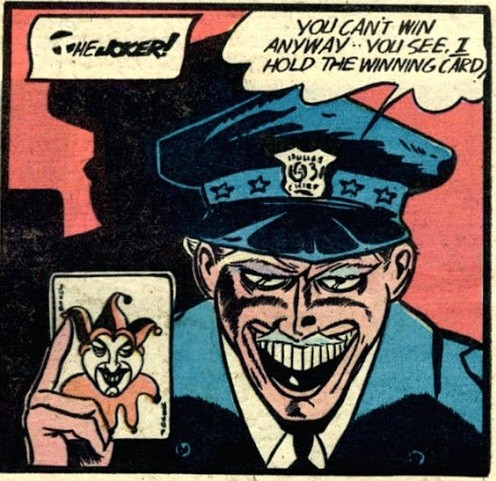
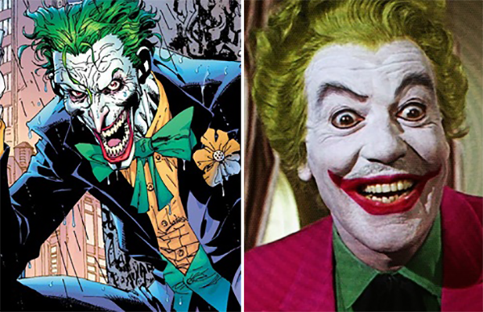

온갖 범죄의 유쾌한 남작, 광기의 화신, 숨쉬는 혼돈.
고담시티의 전문 범죄자. 키 183의 87kg인 녹발을 가진 그는 배트맨의 앙숙이다.


1966년, 조커의 재등장.
1954년 미국의 코믹스에서 잔혹한 장면이나 리얼한 범죄 행위의 묘사가 금지되는 코믹스 윤리규정이 생기면서 조커는 본래의 싸이코스러운 모습을 보여주지 못하고 수면가스정도만 사용하는 애매한 캐릭터가 되었다.
덕분에 조커의 인기는 바닥으로 떨어지면서 1964년 아예 사라져버렸고
1966년 TV드라마판 배트맨을 통해서 당시 인기배우였던 세자르 로메로가 조커역을 맡고 아예 99%광대 캐릭터로 재해석해 활기찬 연기를 보여주면서 다시 떠오르게 된다.
그의 능력.
우리가 영화에서 흔히 봤던 총이나 칼 등을 사용하던 조커의 전투씬과는 달리 원작의 조커가 주로 사용하는 무기는 특제웃음가스이다. 일종의 화학약품으로 "조커 베놈"으로 불리고 피해자가 마구 웃다가 웃는 얼굴로 죽게 만든다.
조커의 일반적인 전투력 자체가 높다고 보긴 어렵지만, 그의 광기와 예측 불허함이 그의 가장 큰 무기이다. 고통을 보며 즐거워하며 폭력을 즐기는 마조히즘과 사디즘을 동시에 느끼는 듯한 모습을 보여준다.
고통을 사랑한다고 할 정도라서 신체적 고통에 큰 영향을 받지않고 치명상을 입고도 재미있다는 듯 웃는 섬뜩한 모습을 종종 볼 수 있다.
다른 여러 빌런들의 악행에 비해 조커의 악행은 굉장히 화려하다.
1대 배트걸 바버라고든<킬링 조크>을 반신불수로 만들어버렸고, 제임스고든을 정신적으로 고문해 지치게 하려 했으며, 고든의 아내를 쏘아 죽인데다가 <노 맨스 랜드(No Man's Land)> 일반적으로 그는 대량살상을 하기때문에 그의 악행은 규모가 크고 심각한 결과를 불러일으켰다.
My Daling,
질서와 선함의 수호자이며 이성적이고 치밀한 배트맨이지만, 역설적이게도 지나칠 정도로 과감하고 필요하다면 위험한 방식을 쓰는 데 전혀 망설임이나 주저함이 없으며 그 본질은 지극히 불안정하다. 반면조커는 이와 완벽하게 반대되는 혼돈과 사악함의 숭배자이자 광기와 불확정성의 화신이지만, 행동적인 측면에서 배트맨의 사고방식와 행동유형에 가장 가깝다.
즉, 배드맨의 정반대인 동시에 가장 배트맨을 닮은 악당으로 배트맨 최고의 라이벌이자 최고의 이해자라고 볼 수 있을 정도다.
조커는 언제나 자신만이 배트맨을 죽일 수 있다고 장담하면서 다른 악당이 배트맨을 죽일 것 같거나 정체를 알아내어 사회적으로 매장시키려할 때 훼방을 놓거나 죽인다. 예를 들어 <조커의 다섯가지복수>에서는 기습으로 배트맨을 쓰러트리게 되자 이런승리는 시시하다면서 오직 배트맨의 우수한 탐정능력을 내 광기와 계략으로 정당하게 쓰러뜨릴때만 가치가 있다며 그냥 살려준다. 영화 <다크 나이트>에서는 왜 자길 죽이려 드냐고 묻는 배트맨에게 자신을 완전하게 만드는 존재가 배트맨인데 왜 널 죽이겠느냐며 광소한다. 심지어 할리퀸이 배트맨을 죽이기 직전까지 몰았을때 조커가 배트맨을 풀어주며 '이런 시시하고 재미없는 장난에 어울리게 해서 미안해'라고 사과하기까지 한다.